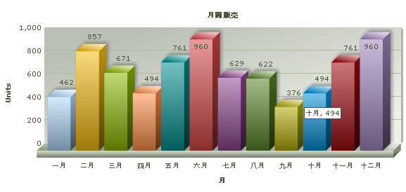
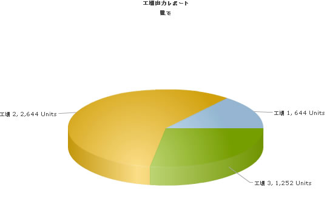

| UTF-8 Examples |
In this section, we will show you how to use FusionCharts XT and Ruby to plot charts from data containing UTF-8 characters. Using the Data URL method we will do the following:
We will use Japanese text in this example but you could extend it to any left-to-right language by applying the same procedure. Before you proceed with the contents in this page, we recommend you to go through the Basic Examples section. All code discussed here is present in
Controller : |
| Plotting a chart with Japanese text from JapaneseData.xml |
|
While using FusionCharts XT with UTF-8 characters, please remember the following:
|
| Setting up the charts for use |
|
In our code, we have used the charts contained in Download Package > Code > RoR > SampleApp > public > FusionCharts folder. When you run your samples, you need to make sure that the SWF files are in proper location. Also the JapaneseData.xml file used in japanese_xmlfile_example action is present in the Download Package > Code > RoR > public > Data folder. Let's now start building our first example. In this example, we will create a "Monthly Unit Sales" chart using the Data URL method. For a start, we will manually code our XML data in a physical XML document JapaneseData.xml, save it with UTF-8 encoding and then utilize it for our chart. Let's first have a look at the XML Data document: <?xml version="1.0" encoding="UTF-8" ?> <chart caption='月間販売' xAxisName='月' yAxisName='Units' decimals='0' formatNumberScale='0'> <set label='一月' value='462'/> <set label='二月' value='857' /> <set label='三月' value='671' /> <set label='四月' value='494' /> <set label='五月' value='761'/> <set label='六月' value='960' /> <set label='七月' value='629' /> <set label='八月' value='622' /> <set label='九月' value='376' /> <set label='十月' value='494' /> <set label='十一月' value='761' /> <set label='十二月' value='960' /> </chart> Please notice, the caption, x-axisname and names of the months in the XML are in Japanese. Assuming that the Fusioncharts::Utf8ExampleController class has been created, we will define a function called japanese_xmlfile_example in this controller. The view used for this controller is the japanese_xmlfile_example.html.erb file. We will use the "common" layout for this view. It is important to have the <meta> tag in the head section of the HTML with the charset defined as UTF-8 as shown below. This tag has been declared in the "common.html.erb" file, so that it is present in all the pages. <meta http-equiv="content-type" content="text/html; charset=utf-8" /> The code in the controller and view are given below. Controller: Fusioncharts::Utf8ExampleController Action: japanese_xmlfile_example class Fusioncharts::Utf8ExampleController < ApplicationController #This is an example showing Japanese characters on the chart. #Here, we have used a pre-defined JapaneseData.xml (contained in /Data/ folder) #This action uses the dataURL method of FusionCharts XT. #A view with the same name japanese_xmlfile_example.html.erb is present #and it is this view, which gets rendered with the layout "common". #render_chart function from the helper is invoked to render the chart. #The function itself has no code, all the work is done in the view. def japanese_xmlfile_example #The common layout for this view render(:layout => "layouts/common") end View: japanese_xmlfile_example.html.erb <% @page_title="FusionCharts - UTF8 日本語 (Japanese) Example" %> <% @page_heading="UTF8 日本語 (Japanese) Example" %> <% @page_subheading="Basic example using data from pre-built JapaneseData.xml" %> <% #Create the chart - Column 3D Chart with data from /Data/JapaneseData.xml render_chart "/FusionCharts/Column3D.swf", "/Data/JapaneseData.xml", "", "JapaneseChart", 600, 300, false, false do-%> <% end -%> The code in the controller action and the view page are similar to the basic example simple_chart action and its view simple_chart.html.erb. Only here, we have used some Japanese text. That is the effort involved in rendering UTF-8 characters on the chart! The chart with Japanese text will look as shown:  Let' move on to our next example where we get the data from the database and dynamically create the XML. |
| Plotting a chart with Japanese text from the database |
|
Let us now create a chart with UTF characters present in the database. For this we will modify the database and add table to contain the Japanese data. |
| Database Configuration |
|
|
Let's now shift our attention to the code that will interact with the database, fetch data and then render a chart. We will create an action japanese_dbexample, its .html.erb view, pie_data_japanese action and its corresponding pie_data_japanese view. The code contained in the controller action, view page are as shown: Controller: Fusioncharts::Utf8ExampleController Action: japanese_dbexample #In this example, we show how to use UTF8 characters in FusionCharts XT by connecting to a database #and using the dataURL method. Here, the XML data #for the chart is generated in pie_data_japanese function. #The function itself does not contain any specific code to handle UTF8 characters. #NOTE: It's necessary to encode the dataURL if you have added parameters to it. def japanese_dbexample @str_data_url = "/Fusioncharts/utf8_example/pie_data_japanese" #The common layout for this view render(:layout => "layouts/common") end # Finds all the factories. # Factory name in japanese is obtained from JapaneseFactoryMaster. # Content-type for its view is set to text/xml and charset to UTF-8. def pie_data_japanese # xml content with charset=utf-8 response.content_type = Mime::XML response.charset = "utf-8" # Find all the factories @factories = Fusioncharts::JapaneseFactoryMaster.find(:all) end end View: japanese_dbexample.html.erb <% @page_title="FusionCharts - UTF8 日本語 (Japanese) Database Example" %> <% @page_heading=" - UTF8 日本語 (Japanese) Example With Data from Database" %> <% @page_subheading="" %> <% #Create the chart - Pie 3D Chart with dataURL as @str_data_url. render_chart '/FusionCharts/Pie3D.swf',@str_data_url,'','FactorySum', 650, 450, false, false do-%> <% end -%> View: pie_data_japanese.html.erb <% str_xml = get_UTF8_BOM #Function present in fusioncharts_helper library str_xml +="<?xml version='1.0' encoding='UTF-8'?>" str_xml +="<chart caption='工場出力レポート' subCaption='数量面で' decimals='0' showLabels='1' numberSuffix=' units' pieSliceDepth='30' formatNumberScale='0'>" @factories.each do|factory| str_xml += "<set label='"+factory.name+"' value='"+factory.total_quantity.to_s+"'/>" end str_xml+="</chart>" #Create the chart - Pie 3D Chart with data from str_xml %><%=str_xml%> The action japanese_db_example and its view japanese_db_example.html.erb are very similar to default action of Fusioncharts::DbDataUrlController and the corresponding default.html.erb view. Here we have used Japanese text for page heading, etc. There are no UTF specific changes that need to be done to this action and its view. Let's move on to the pie_data_japanese action and its view. In pie_data_japanese action, we have set the response header with right content-type and charset as shown: response.content_type = Mime::XML response.charset = "utf-8" We have used the JapaneseFactoryMaster to find the factory names in Japanese. In the view pie_data_japanese.html.erb, we have built the xml as a string using @factory_data present in the controller. The steps followed in this page are:
When we view the chart in the browser, it will look like this:  In Download Package > Code > RoR > SampleApp > app > controllers > fusioncharts > utf8_example_controller.rb, we have more example codes for French language too, which have not been explained here, as they are similar in concept. You can directly see the code and get more insight into it. |